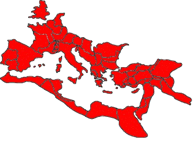
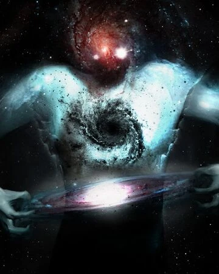
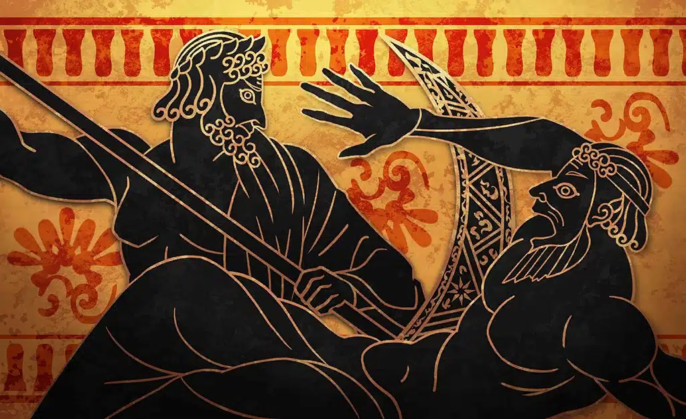
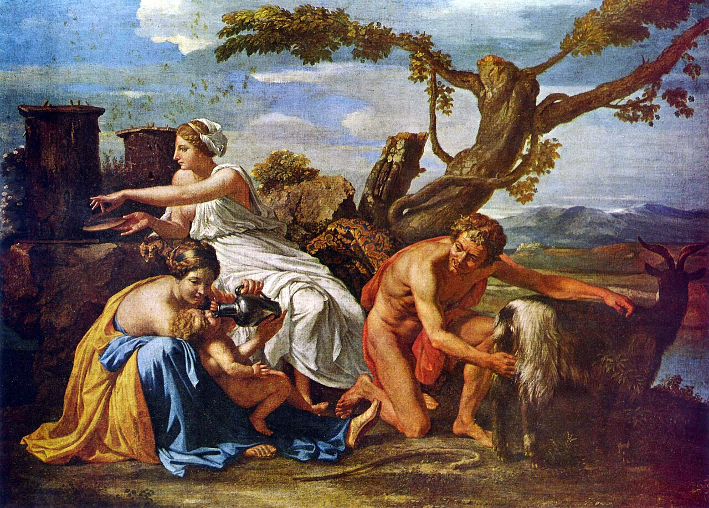
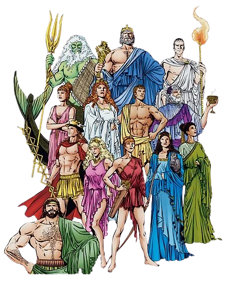

Greco-Roman mythology encompasses the myths, legends, and tales of both Greek and Roman mythology; the two are often treated as a single body of lore because Roman mythology is inherently Greco-Roman—rather than creating a mythology of their own, the Romans simply adapted existing elements and subtly altered certain stories to suit their own preferences.

The influence of Greco-Roman mythology is one of the most enduring in Western history and stands as the world's primary mythological reference point, a status resulting from the expansion of the Roman Empire (27 BC – 476 AD). As Rome conquered new territories, it spread its culture, religion, and—consequently—the myths of Greek origin that had already been integrated into daily life. This process ensured the survival of these stories for centuries and inspired diverse peoples.
An interesting feature of Greco-Roman mythology is that the gods possess human emotions, and not all of them are worshipped. It is also important to note that these stories normalize countless crimes; however, bearing in mind that this site is informational, such behavior was entirely normal in that context—we do not condone any of it.
Creation of the universe

Before explaining this mythology, it is important to note that it does not hold that the gods created the universe; on the contrary, the belief was that the universe created the gods. Greek cosmogony begins with Chaos—considered the "beginning of all things" or the "void"—until Chaos became aware of its own existence. From it emerged Nyx (Night) and her brother Erebus (the nether darkness), followed by the birth of Eros (Love). Also born were Gaia (known to the Romans as Tellus or Terra), the Earth, and Uranus (known to the Romans as Caelus or Coelus), the Sky. Both possessed celestial forms; they united and produced twelve children—the Titans and Titanesses—each representing an element of the Earth.

According to Greek legend, Uranus feared losing his power to one of his children; consequently, whenever a new child was born, he would return it to Gaia's womb. Weary of Uranus's violent behavior, Gaia decided to hide her youngest son, Cronus (known as Saturn in Latin); when he grew up, at his mother's behest, he attacked his father with a sickle and castrated him. From Uranus's blood, the Giants, the Erinyes, and the Meliae were born. From Uranus's semen, Aphrodite (known as Venus in Latin)—the Greek goddess of love—emerged.
Thus, Cronus came to rule over everything and took his sister Rhea as his wife, fathering six children with her—known as the Cronids: Hestia (Vesta), Demeter (Ceres), Hera (Juno), Hades (Pluto), Poseidon (Neptune), and Zeus (Jupiter). However, Cronus was constantly worried about an ancient curse cast by Uranus before being dethroned: that one of his children would seize power and cast him into oblivion in the underworld. To prevent the prophecy from coming true, he devoured every child that was born.

However, just as Gaia had done, Rhea hid Cronus's last child, Zeus, and handed the Titan a rock instead; he swallowed it without realizing it was not a child. Zeus grew up in a cave on Crete, under the protection of nymphs and his mother, Rhea. When he was ready, Zeus joined forces with Metis (daughter of the Titan Oceanus), and together they made Cronus regurgitate all the children he had devoured.
Zeus and his siblings managed to defeat Cronus after a ten-year war known as the "Titanomachy." The Titan was cast into Tartarus—a realm of great chaos and torment—and Zeus and the other gods gained the gift of immortality upon defeating Cronus, as he was considered the "lord of time."
Gods

Zeus/Júpiter: king of the gods, god of thunder and lightning, of law and order
Hera/Juno: queen of the gods, goddess of marriage and fertility
Poseidon/Netuno: god of the seas, horses, and earthquakes
Hades/Plutão: god of the underworld and the dead
Atena/Minerva: goddess of wisdom, strategy, and just war
Ares/Marte: god of war
Deméter/Ceres: goddess of agriculture and the harvest
Apolo: god of music, poetry, prophecy, and medicine
Ártemis/Diana: goddess of the hunt, wild nature, and the moon
Hefesto/Vulcano: god of the forge and metallurgy
Afrodite/Vênus: goddess of love, beauty, and sexuality
Hermes/Mercúrio: messenger of the gods, god of commerce, travelers, and thieves
Dionísio/Baco: god of wine, theater, and festivities
How this reaches us
Greco-Roman mythology has come down to us through a long chain of transmission that began with military conquest and cultural appropriation, passed through preservation in medieval monasteries, and exploded with the artistic revival of the Renaissance.
Sources of information about this mythology include paintings, books (such as the Iliad and the Odyssey), and teachings preserved by other peoples.
Most works influenced by mythology draw upon it; famous—though not always obvious—examples include Stranger Things, Star Wars, Matrix, and so on. This influence is typically used to shape minor villains or philosophical concepts.